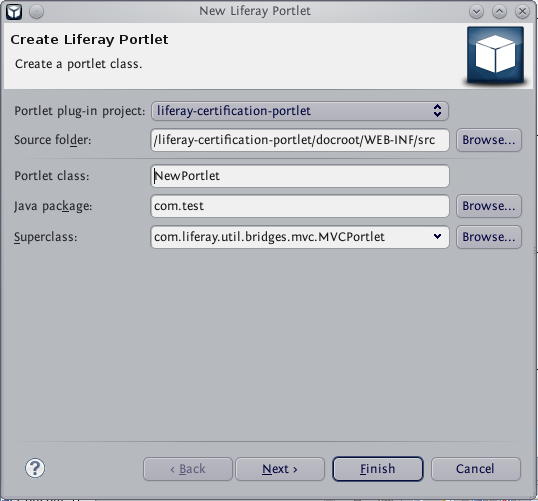
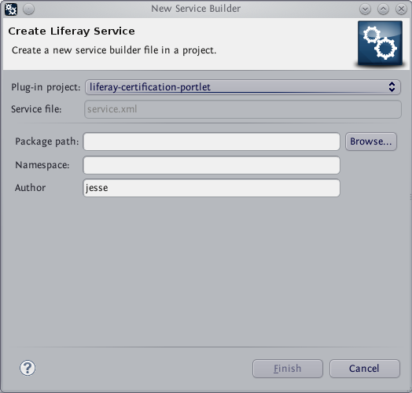

Creating New Liferay Plug-in Projects
- Creating New Liferay Plug-in Projects
- Creating New Portlets
- Creating New Hooks
- Creating New Services
- Creating Layout Templates
Creating New Liferay Plug-in Projects
- Liferay IDE supports development of five Liferay plug-in types: portlets, hooks, layout templates, themes, and EXT-style plug-ins.
- To create a new plug-in project with Liferay IDE, select the Liferay Plug-in Project option from the Eclipse File menu. (Go to File > New > Liferay Plug-in Project).

- Choose a project name for your plugin. The project name will serve as the file name of your project. Note that the project name cannot include any blank spaces.
- Choose a display name for your plugin. The display name will serve as the title of your project and can include blank spaces.
- Under Configuration, you will need to select a Plug-ins SDK and a Runtime. You should already have these installed if you followed the directions in the Getting Started section and can simply select them from a list. As defaults, you should use the latest Liferay Plug-ins SDK and the latest Liferay Portal Tomcat Server.
- Under Plug-in Type, select one of the five Liferay plug-in types.
- Click Finish, and your project should automatically build for you. You can view and modify your project using the Package Explorer that sits at the left side of the screen when using the Liferay perspective within Eclipse.
Additionally, you can create a new portlet, hook, service, or layout template within an existing project by making the appropriate selection from the File menu of Eclipse.
Creating New Portlets
- You can create a new portlet within an existing project by selecting Liferay Portlet from the Eclipse File menu (File > New > Liferay Portlet).

- In this window, you will input the information required to create a portlet class.
- Under Portlet plug-in project, choose a name for your portlet.
- The Source folder determines the location of the file directory for your portlet project.
- Portet class specifies the name of the Java class that your portlet extends: NewPortlet.
- Java package specifies the location of the Java objects that NewPortlet needs to use.
- Superclass specifies the location of the location of the MVCPortlet object which NewPortlet extends. Click next.

- You will specify portlet deployment descriptor details in this window.
- Under Portlet Info, enter the name, display name, and title of your portlet.
- Under Portlet Modes, you can choose whether or not you want your portlet to have view, edit, and display modes by checking or unchecking the appropriate boxes.
- Under Liferay Portlet Modes, you can choose which of six modes available to Liferay portlets you want your portlet to use.
- Under Resources, you can decide whether or not your portlet will create JSP files. If your portlet will do so, you have to specify a JSP folder. Additionally, you can decide whether or not your portlet will use a resource bundle file. If it will, then you have to specify the resource bundle file path. Click next.

- You will continue specifying portlet deployment descriptor details in this window.
- Under Liferay Portlet Info you can name your portlet and associate an icon to it. Check the Allow multiple instances button if you want your portlet to be instanceable. If your portlet will use CSS and Javascript you need to specify the locations of your portlet project’s CSS and Javascript folder and give your portlet a CSS classname.
- Under Liferay Display you can select a display category (default category: sample). There is a long list to choose from. Click next.

- In this last window you can specify modifiers, interfaces, and method stubs to generate within your portlet class.
- For modifiers, you can choose public, abstract, or final.
- You can add an interface by specifying its location. Click add, then browse to its location, then select.
- If you would like to inherit constructors or abstract methods from your portlet’s superclass, check the appropriate boxes. Then you can select the specific methods you would like to use for your portlet class.
- When you are done, click Finish, and your project should automatically build for you.
Creating New Hooks
- You can create a new hook within a Liferay hook project by selecting Liferay Hook from the Eclipse File menu. (File > New > Liferay Hook).

- First, you need to select a name for your new hook project. Then you can specify which hook type(s) to create by checking the appropriate boxes. After making your selections, click Next.

- If you selected Create JSPs, you will need to create a custom JSP folder and specify specific JSP files to overwrite. Click next.

- If you selected Portal properties, you will need to either define actions to be executed on portal events or specify portal properties to override. Click next.

- If you selected services, you will need to specify which Liferay services to extend. Click next.

- If you selected Language properties, you will need to create a folder for new language properties files and add the files. Click Finish to complete your hook project.
Creating New Services
- You can create a new service plug-in project with Liferay IDE by selecting Liferay Service from the Eclipse File menu. (File > New > Liferay Service).

- First, you have to specify a name for your new service project.
- A new service.xml will be generated for you by default. However, you may choose to use files that you have already created. Just browse to their location under Package path.
- Finally, enter a namespace and an author, click Finish and your services should build for you.
Creating Layout Templates
- You can create a new layout template with Liferay IDE by selecting Liferay Layout Template from the Eclipse File menu. (File > New > Liferay Layout Template).

- To create a liferay layout template, you first need to select a Layout plug-in project.
- You need to enter a name and an ID for your layout template.
- You also need to specify the location of both a template file and WAP template file for your layout temple.
- After you specify the location of a thumbnail file for your template, click Finish and your project should build for you.